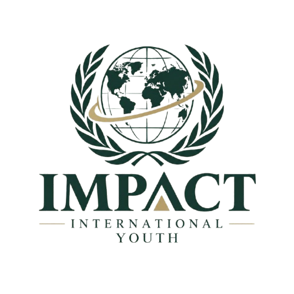

Stay Informed
Explore recent developments and major issues shaping communities and the international landscape.
IIY Webinars bring people together to explore the world's most pressing issues, understand what is happening around us, and stay up to date with developments shaping our world.

IIY Webinars is a developing initiative of Impact International focused on discussion and awareness. Each webinar is designed around an important issue affecting people, communities, or the wider world.
Our goal is not simply to talk about current events. We want participants to understand the context, hear different perspectives, ask meaningful questions, and leave with a clearer understanding of the issue.
The world changes quickly. IIY Webinars aims to make it easier for our community to keep learning and stay informed.
Explore recent developments and major issues shaping communities and the international landscape.
Go beyond headlines by looking at context, causes, consequences, perspectives, and possible responses.
Create a welcoming environment where participants can ask questions, exchange ideas, and learn from one another.
Encourage a generation that is curious about the world and prepared to engage with important issues.
IIY Webinars is currently being developed as part of Impact International Youth's growing community. Upcoming sessions, speakers, and topics will be announced as the initiative expands.
View Events